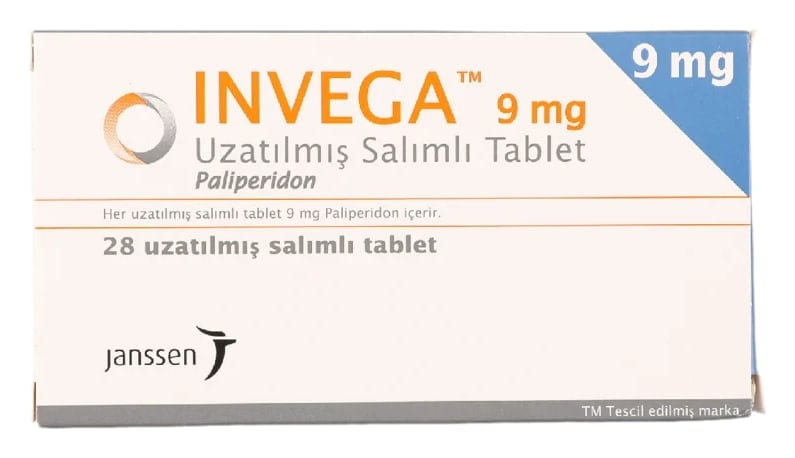

Invega 9 mg Uzatılmış Salımlı Tablet, 28 Adet

Ne için kullanılır
KT · Bölüm 1Bu Kullanma Talimatı'nın bölümleri henüz ayrıştırılmadı; tam metin alt bilgideki TİTCK PDF bağlantısında.

Bu Kullanma Talimatı'nın bölümleri henüz ayrıştırılmadı; tam metin alt bilgideki TİTCK PDF bağlantısında.